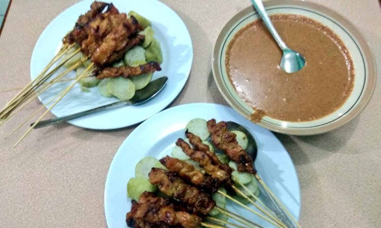
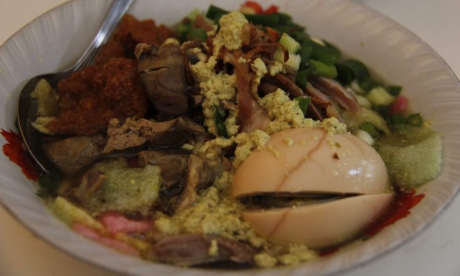
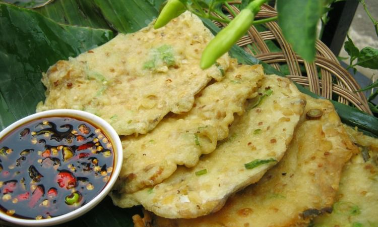
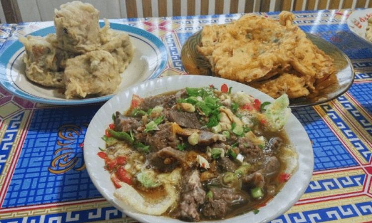

1.Sate Blater

Kuliner khas Purbalingga yang tidak boleh Anda lewatkan begitu saja ketika berkunjung ke kota ini adalah sate blater. Dinamakan blater karena makanan ini berasal dari Desa Blater yang ada di Kecamatan Kalimanah. Meskipun bahan yang digunakan hampir sama dengan sate daerah lainnya, ada yang membuatnya menarik.
Hal ini bisa dilihat dari cara memasaknya yang harus direndam terlebih dahulu dengan bumbu khusus. Selain itu, proses memasaknya dilakukan di atas arang dengan waktu yang cukup lama. Ketika dibakar, sate harus terus dilumuri dengan bumbu secara berulang kali agar bumbunya lebih meresap.
Proses memasaknya yang cukup lama ini membuat sate blater bisa bertahan sekitar tiga hari jika disimpan di tempat yang aman. Untuk mencicipi kuliner khas ii, Anda bisa langsung datang ke Desa Blater. Anda akan menjumpai warung yang menjual sate ini dengan harga yang dibanderol sekitar 12 ribu rupiah per 10 tusuk satenya.
2.Soto Kriyik

Berkunjung ke Purbalingga kurang afdol rasanya jika tidak mencoba makanan terkenal ini. Soto Kriyik merupakan makanan khas yang selalu menjadi incaran para wisatawan yang berlibur ke Purbalingga. Pasalnya, kelezatan dari makanan berkuah ini tidak bisa ditemukan di daerah lainnya.
Soto kriyik terbuat dari kombinasi berbagai bahan makanan. Untuk isinya yaitu mie bihun, kecambah dan lontong. Sedangkan, agar rasa yang dihadirkan semakin nikmat, biasanya diberi tambahan jeroan dan ayam. Jika Anda menyukai hidangan pedas, maka Anda dapat menambahkan sambal kacang di dalam makanan ini.
Untuk anda yang ingin mencicipi kelezatan dari soto kriyik, Anda bisa datang ke warung yang berada di daerah Desa Bojong. Tempat makan tersebut sudah berdiri lama dan menjadi salah satu paling terkenal menyajikan Soto Kriyik yang lezat. Untuk mencicipinya, Anda hanya perlu merogoh kocek sebesar sepuluh ribu per porsinya.
3.Gulai Melung
Jika Anda belum pernah ke Purbalingga, pasti Anda akan dibuat terkejut dengan kuliner khasnya. Salah satu makanan yang bisa Anda nikmati adalah gulai melung. Makanan ini memiliki cita rasa yang berbeda dibandingkan dengan gulai pada umumnya karena diolah dengan rempah pilihan.
Gulai melung dibuat dari bahan dasar daging kambing yang dicampur dengan berbagai isian lainnya seperti babat dan sumsum. Yang membuat rasa khas dari masakan ini yaitu proses memasaknya masih menggunakan peralatan tradisional. Sehingga tidak heran jika disantap, akan ada rasa khas dan tentunya lezat.
Untuk bisa menikmati kelezatan gulai melung, Anda hanya perlu merogoh kocek mulai dari 15 ribu rupiah saja. Tidak usah khawatir mencari tempat makan, karena banyak warung yang menyediakan menu ini sebagai hidangan utama. Bahkan, hampir di setiap wilayah di Purbalingga banyak penjual yang menghidangkan makanan satu ini.
4.Tempe Mendoan

Makanan selanjutnya yang harus Anda coba di Purbalingga adalah tempe mendoan. Kuliner ini menjadi primadona di daerah Jawa Tengah karena kelezatannya. Bagi Anda yang belum mengenal mendoan itu apa, makanan ini merupakan sebuah hidangan yang terbuat dari tempe kedelai yang digoreng dengan menggunakan tepung terigu.
Menariknya, makanan ini dibuat dengan tempe khusus yang mempunyai bentuk tipis. Untuk menghasilkan rasa gurih dan nikmat, tempe tipis ini dimasukkan ke dalam tepung berbumbu. Selanjutnya, tempe yang sudah dilumuri adonan tepung akan melalui proses penggorengan dengan minyak panas.
Namun, bagaimana menemukan penjual tempe mendoan yang enak? Tidak usah risau, karena Anda dapat menjumpainya di hampir di setiap sudut Kota Purbalingga. Bahkan berbagai tempat wisata yang ada di kota tersebut juga banyak yang menjualnya. Harga yang dipatok juga sangat terjangkau mulai dari seribu rupiah saja.
5.Soto Bancar

Selain soto kriyik, ada juga soto khas yang ada di Purbalingga yaitu soto bancar. Umumnya, soto ini disajikan dalam porsi besar, sehingga harganya relatif lebih mahal sekitar 20 ribu per porsinya. Untuk mencicipi kuliner khas ini, Anda bisa dengan mudah menjumpainya di berbagai warung makan di Purbalingga.